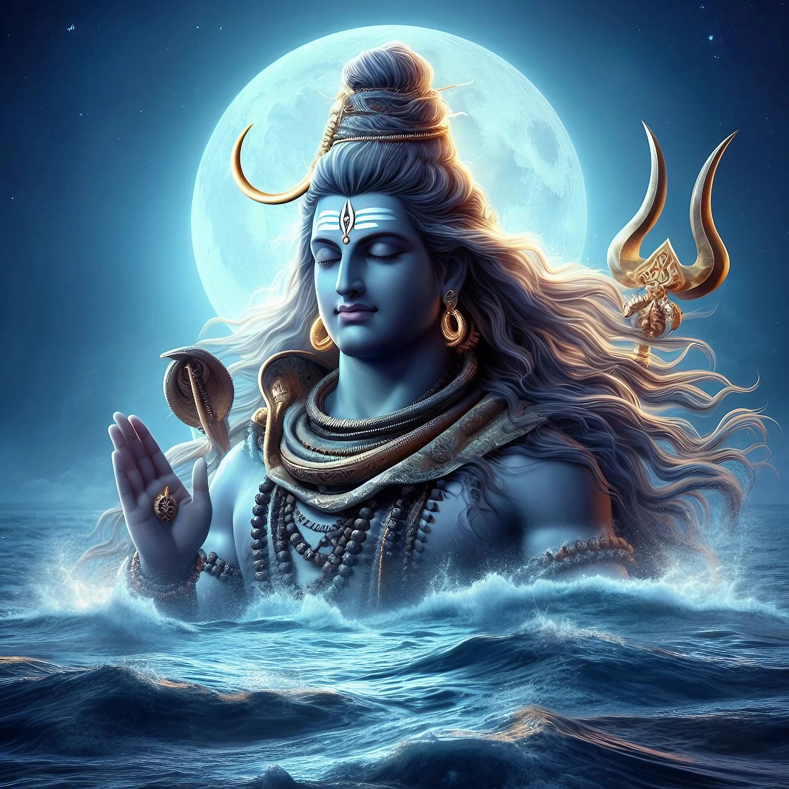
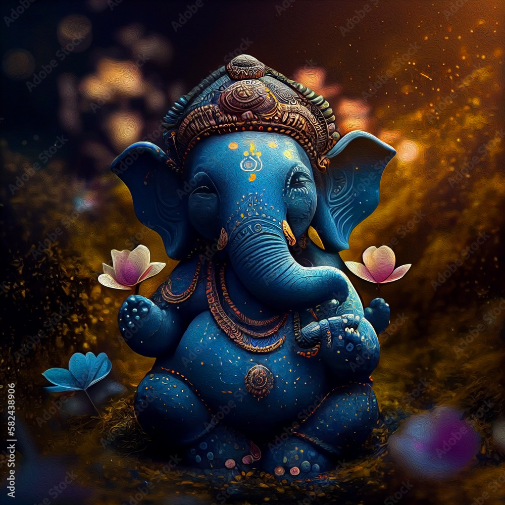

Lord Shiva
Lord Shiva, one of the principle deties of Hindusim, is known as the destroyer and transforamtion is the Holy trinity. he symbolizes both destruction and regeneration and is oftern depicated meditating on Mou nt Kailash.
Lord Ganesha
Lord Ganesha the elephant-headed son of the Lord Shiva and Goddess Parvati, is the remover of obstacles and the god of wisdom, knowledge and beginnings. He is worshiped first before any auspicious task or ritual.
Lord Rama

Lord Ram, the seventh incarnation of lord Vishnu, is the embodiment of truth, viture, and dharma. he is hero of epic Ramayana and is reversed as the ideal son, husband, king and warrior